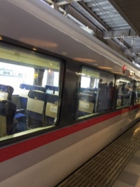
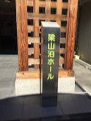
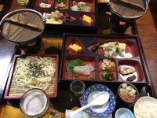
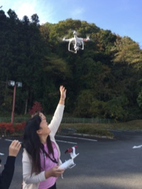
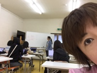

PyLadies合宿に行ってきました¶
2017-11-04
PyLadies Tokyo 秋合宿 2017 に行ってきました。
夕飯タイムです 🍻 #pyladiestokyo pic.twitter.com/quwOTmJ4nC
— PyLadiesTokyo (@PyLadiesTokyo) 2017年11月3日
1泊2日の参加でしたが、楽しかったです。
池袋駅からレッドアロー号に乗車しました。三連休の初日ということで満席でした。入間で航空ショーがあったらしく通常列車も混んでいたようです。
西武秩父駅はお土産売り場とフードコートがあって綺麗でした。宣伝するだけあって力を入れているんですね。

駅にお迎えに来ていただいて、もくもくを行うホールへ移動しました。広かったです。
1日目のモクモクでは PythonユーザのためのJupyter［実践］入門 の2章を読みました。 あとは雑談。みんなの作業を邪魔したのは私です。
1日目の夕食。ジョッキのビールがサービスでした。旅館のご飯最高！
はー、ビールも飲んだし寝よう！と思ったらここからが2回戦？みんなモクモクはじめたんですよ！！∑(￣□￣;)ﾅﾝﾄ!!
酔っ払うとやる気が無くなるのでその後はなんとなくワインを飲みながらなにかしようと思って麻雀の点数を計算してくれるライブラリ作りました。 って言っても、ハンと符と親か子かを引数で渡すと点数を出力するだけ。眠いし、飲んでるし、それが限界よぉぉぉぉ(´；ω；｀)って思っていたら、みんなは画像認識サービスのハンズオンをやりはじめてたよ！！ マジカ！PyLadiesハンパねー！と驚愕です。
私は11時頃リタイヤしましたが、その後、 @a_macbee さんもハングアウトで参戦してさらにやってたそうです。 私は寝てたけど。
今日いまのところそんなにお酒飲む人がいなくて震えると同時に悲しい気持ちになっている#PyLadiesTokyo
— まーや(Maaya) (@maaya8585) 2017年11月3日
サーセン。次回は飲みます。(´；ω；｀)
夕飯が早かったので朝食も食べられました。

その後、ドローンを @se_lina08 さんが宿の近くの駐車場で飛ばしてくれました。初めての生ドローンでした。結構、早いんですね。音もすごくて、おもってたよりおもちゃ感がなかったです。
そして二日目。 Tornado Web Server を利用したチャットサービス構築ハンズオンを行いました。 GitHub に課題があります。
私は講師の話を聞かずにPython3で動かすために回答を修正してました。 「今度、PR出しますね。」 と思ったら、対応しているらしい。(´；ω；｀)
お昼は名物のわらじかつ丼を食べました。インターネットに載っているお店はすごい行列だったので、避けて、近くの喫茶店へ入ったらそこにもありました。わらじかつ丼。 2枚は多いですよと店員さんに言われたので片方わらじ丼。アドバイス通りカツが大きかったです。

と、言うわけで、午後もちょっとやってタイムアップしたので私は帰りました。 帰りのレッドアロー号もなんと満席！秩父って大人気なのね〜。
初めての合宿参加でしたが、とても楽しかったです。いろいろ用意してくださったスタッフの皆様ありがとうございました！！ 特にハンズオン講師やりまくりで、 @maaya8585 さん、ありがとうございました！！ 今度参加するときは私もなんか用意してきます。今回はTAもやらずにだらけてました。反省してます。
また、参加したいです！これからもよろしくお願いします。
ことしの合宿参加者集合写真！#pyladiestokyo pic.twitter.com/ZoOSKQNwpF
— PyLadiesTokyo (@PyLadiesTokyo) 2017年11月4日
おみやげにテストについてのPyLadiesの会のお話を頼まれたので、なんとかその時までには皆様に話せるレベルにテスト力を上げておきます。 ありがとうございました！！